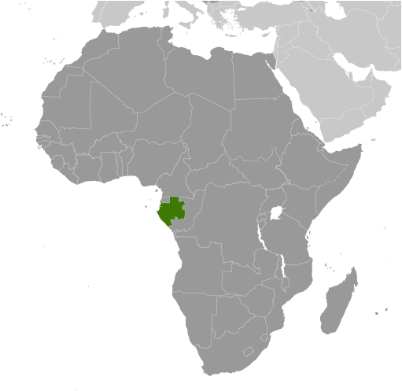
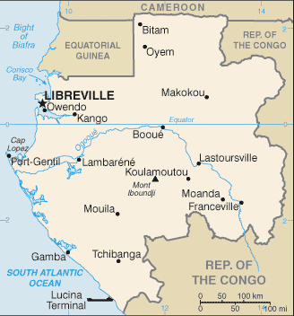
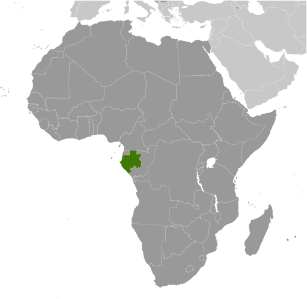
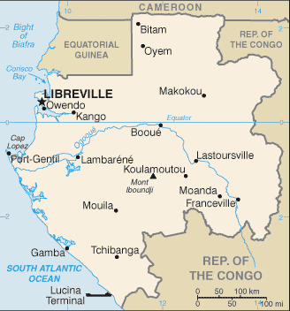

Africa :: GABON
Introduction :: GABON
-
Following, independence from France in 1960, El Hadj Omar BONGO Ondimba - one of the longest-ruling heads of state in the world - dominated the country's political scene for four decades (1967-2009). President BONGO introduced a nominal multiparty system and a new constitution in the early 1990s. However, allegations of electoral fraud during local elections in December 2002 and the presidential election in 2005 exposed the weaknesses of formal political structures in Gabon. Following President BONGO's death in 2009, a new election brought his son, Ali BONGO Ondimba, to power. Despite constrained political conditions, Gabon's small population, abundant natural resources, and considerable foreign support have helped make it one of the more stable African countries.President Ali BONGO Ondimba’s controversial August 2016 reelection sparked unprecedented opposition protests that resulted in the burning of the parliament building. The election was contested by the opposition after fraudulent results were flagged by international election observers. Gabon’s Constitutional Court reviewed the election results but ruled in favor of President BONGO, upholding his win and extending his mandate to 2023.
Geography :: GABON
-
Central Africa, bordering the Atlantic Ocean at the Equator, between Republic of the Congo and Equatorial Guinea1 00 S, 11 45 EAfricatotal: 267,667 sq kmland: 257,667 sq kmwater: 10,000 sq kmcountry comparison to the world: 78slightly smaller than Coloradototal: 3,261 kmborder countries (3): Cameroon 349 km, Republic of the Congo 2,567 km, Equatorial Guinea 345 km885 kmterritorial sea: 12 nmcontiguous zone: 24 nmexclusive economic zone: 200 nmtropical; always hot, humidnarrow coastal plain; hilly interior; savanna in east and southmean elevation: 377 melevation extremes: lowest point: Atlantic Ocean 0 mhighest point: Mont Iboundji 1,575 mpetroleum, natural gas, diamond, niobium, manganese, uranium, gold, timber, iron ore, hydropoweragricultural land: 19%arable land 1.2%; permanent crops 0.6%; permanent pasture 17.2%forest: 81%other: 0% (2011 est.)40 sq km (2012)the relatively small population is spread in pockets throughout the country; the largest urban center is the capital of Libreville, located along the Atlantic coast in the northwestnonedeforestation; burgeoning population exacerbating disposal of solid waste; oil industry contributing to water pollution; wildlife poachingparty to: Biodiversity, Climate Change, Climate Change-Kyoto Protocol, Desertification, Endangered Species, Hazardous Wastes, Law of the Sea, Marine Dumping, Ozone Layer Protection, Ship Pollution, Tropical Timber 83, Tropical Timber 94, Wetlands, Whalingsigned, but not ratified: none of the selected agreementsa small population and oil and mineral reserves have helped Gabon become one of Africa's wealthier countries; in general, these circumstances have allowed the country to maintain and conserve its pristine rain forest and rich biodiversity
People and Society :: GABON
-
1,772,255note: estimates for this country explicitly take into account the effects of excess mortality due to AIDS; this can result in lower life expectancy, higher infant mortality, higher death rates, lower population growth rates, and changes in the distribution of population by age and sex than would otherwise be expected (July 2017 est.)country comparison to the world: 153noun: Gabonese (singular and plural)adjective: GaboneseBantu tribes, including four major tribal groupings (Fang, Bapounou, Nzebi, Obamba); other Africans and Europeans, 154,000, including 10,700 French and 11,000 persons of dual nationalityFrench (official), Fang, Myene, Nzebi, Bapounou/Eschira, BandjabiRoman Catholic 41.9%, Protestant 13.7%, other Christian 32.4%, Muslim 6.4%, animist 0.3%, other 0.3%, none/no answer 5% (2012 est.)Gabon’s oil revenues have given it one of the highest per capita income levels in sub-Saharan Africa, but the wealth is not evenly distributed and poverty is widespread. Unemployment is especially prevalent among the large youth population; more than 60% of the population is under the age of 25. With a fertility rate still averaging more than 4 children per woman, the youth population will continue to grow and further strain the mismatch between Gabon’s supply of jobs and the skills of its labor force.Gabon has been a magnet to migrants from neighboring countries since the 1960s because of the discovery of oil, as well as the country’s political stability and timber, mineral, and natural gas resources. Nonetheless, income inequality and high unemployment have created slums in Libreville full of migrant workers from Senegal, Nigeria, Cameroon, Benin, Togo, and elsewhere in West Africa. In 2011, Gabon declared an end to refugee status for 9,500 remaining Congolese nationals to whom it had granted asylum during the Republic of the Congo’s civil war between 1997 and 2003. About 5,400 of these refugees received permits to reside in Gabon.0-14 years: 41.9% (male 373,307/female 369,237)15-24 years: 20.46% (male 181,823/female 180,837)25-54 years: 29.52% (male 262,511/female 260,673)55-64 years: 4.36% (male 37,178/female 40,014)65 years and over: 3.76% (male 28,664/female 38,011) (2017 est.)total dependency ratio: 67.4youth dependency ratio: 59.9elderly dependency ratio: 7.6potential support ratio: 13.2 (2015 est.)total: 18.6 yearsmale: 18.4 yearsfemale: 18.8 years (2017 est.)country comparison to the world: 2071.92% (2017 est.)country comparison to the world: 5534.2 births/1,000 population (2017 est.)country comparison to the world: 2413 deaths/1,000 population (2017 est.)country comparison to the world: 15-2 migrant(s)/1,000 population (2017 est.)country comparison to the world: 163the relatively small population is spread in pockets throughout the country; the largest urban center is the capital of Libreville, located along the Atlantic coast in the northwesturban population: 87.6% of total population (2017)rate of urbanization: 2.38% annual rate of change (2015-20 est.)LIBREVILLE (capital) 707,000 (2015)at birth: 1.03 male(s)/female0-14 years: 1.01 male(s)/female15-24 years: 1 male(s)/female25-54 years: 1 male(s)/female55-64 years: 0.93 male(s)/female65 years and over: 0.75 male(s)/femaletotal population: 0.99 male(s)/female (2016 est.)20.3 yearsnote: median age at first birth among women 25-29 (2012 est.)291 deaths/100,000 live births (2015 est.)country comparison to the world: 42total: 44.1 deaths/1,000 live birthsmale: 50.8 deaths/1,000 live birthsfemale: 37.3 deaths/1,000 live births (2017 est.)country comparison to the world: 42total population: 52.1 yearsmale: 51.7 yearsfemale: 52.5 years (2017 est.)country comparison to the world: 2214.39 children born/woman (2017 est.)country comparison to the world: 2331.1% (2012)3.4% of GDP (2014)country comparison to the world: 1756.3 beds/1,000 population (2010)improved:urban: 97.2% of populationrural: 66.7% of populationtotal: 93.2% of populationunimproved:urban: 2.8% of populationrural: 33.3% of populationtotal: 6.8% of population (2015 est.)improved:urban: 43.4% of populationrural: 31.5% of populationtotal: 41.9% of populationunimproved:urban: 56.6% of populationrural: 68.5% of populationtotal: 58.1% of population (2015 est.)3.6% (2016 est.)country comparison to the world: 1648,000 (2016 est.)country comparison to the world: 571,500 (2016 est.)country comparison to the world: 59degree of risk: very highfood or waterborne diseases: bacterial diarrhea, hepatitis A, and typhoid fevervectorborne disease: malaria and dengue feverwater contact disease: schistosomiasisanimal contact disease: rabies (2016)15% (2016)country comparison to the world: 1276.5% (2012)country comparison to the world: 792.7% of GDP (2014)definition: age 15 and over can read and writetotal population: 83.2%male: 85.3%female: 81% (2015 est.)total: 35.7%male: 30.5%female: 41.9% (2010 est.)
Government :: GABON
-
conventional long form: Gabonese Republicconventional short form: Gabonlocal long form: Republique Gabonaiselocal short form: Gabonetymology: name originates from the Portuguese word "gabao" meaning "cloak," which is roughly the shape that the early explorers gave to the estuary of the Komo River by the capital of Librevillepresidential republicname: Librevillegeographic coordinates: 0 23 N, 9 27 Etime difference: UTC+1 (6 hours ahead of Washington, DC, during Standard Time)9 provinces; Estuaire, Haut-Ogooue, Moyen-Ogooue, Ngounie, Nyanga, Ogooue-Ivindo, Ogooue-Lolo, Ogooue-Maritime, Woleu-Ntem17 August 1960 (from France)Independence Day, 17 August (1960)history: previous 1961; latest drafted May 1990, adopted 15 March 1991, promulgated 26 March 1991amendments: proposed by the president of the republic, by the Council of Ministers, or by one-third of either house of Parliament; passage requires Constitutional Court evaluation, at least two-thirds majority vote of two-thirds of the Parliament membership convened in joint session, and approval in a referendum; constitutional articles on Gabon’s democratic form of government cannot be amended; amended several times, last in 2011 (2017)mixed legal system of French civil law and customary lawhas not submitted an ICJ jurisdiction declaration; accepts ICCt jurisdictioncitizenship by birth: nocitizenship by descent only: at least one parent must be a citizen of Gabondual citizenship recognized: noresidency requirement for naturalization: 10 years18 years of age; universalchief of state: President Ali BONGO Ondimba (since 16 October 2009)head of government: Prime Minister Emmanuel ISSOZE-NGONDET (since 29 September 2016)cabinet: Council of Ministers appointed by the prime minister in consultation with the presidentelections/appointments: president directly elected by simple majority popular vote for a 7-year term (no term limits); election last held on 27 August 2016 (next to be held in August 2023); prime minister appointed by the presidentelection results: Ali BONGO Ondimba reelected president; percent of vote - Ali BONGO Ondimba (PDG) 49.8%, Jean PING (UFC) 48.2%, other 2.0%description: bicameral Parliament or Parlement consists of the Senate or Senat (number of seats not fixed; members indirectly elected by municipal councils and departmental assemblies by absolute majority vote in 2 rounds; members serve 6-year terms) and the National Assembly or Assemblee Nationale (120 seats; members elected in single-seat constituencies by absolute majority vote in 2 rounds if needed; members serve 5-year terms)elections: Senate - last held on 13 December 2014 (next to be held in January 2020); National Assembly - last held on 17 December 2011 (next originally scheduled on 27 December 2016, was rescheduled several times, latest to April 2018)election results: Senate - percent of vote by party - NA; seats by party - PDG 81, CLR 7, PSD 2, ADERE-UPG 1, UPG 1, PGCI 1, independent 7; National Assembly - percent of vote by party - NA; seats by party - PDG 113, RPG 3, other 4highest court(s): Supreme Court (consists of 4 permanent specialized supreme courts - Supreme Court or Cour de Cassation, Administrative Supreme Court or Conseil d'Etat, Accounting Supreme Court or Cour des Comptes, Constitutional Court or Cour Constitutionnelle - and the non-permanent Court of State Security, initiated only for cases of high treason by the president and criminal activity by executive branch officialsjudge selection and term of office: appointment and tenure of Supreme, Administrative, Accounting, and State Security courts NA; Constitutional Court judges appointed - 3 by the national president, 3 by the president of the Senate, and 3 by the president of the National Assembly; judges serve 7-year, single renewable termssubordinate courts: Courts of Appeal; county courts; military courtsCircle of Liberal Reformers or CLR [General Jean-Boniface ASSELE]Democratic and Republican Alliance or ADERE [DIDJOB Divungui di Ndinge]Gabonese Democratic Party or PDG [Ali BONGO Ondimba]Independent Center Party of Gabon or PGCI [Luccheri GAHILA]Rally for Gabon or RPGSocial Democratic Party or PSD [Pierre Claver MAGANGA-MOUSSAVOU]Union for the New Republic or UPRN [Louis Gaston MAYILA]Union of Gabonese People or UPG [Richard MOULOMBA]Union of Forces for Change or UFC [Jean PING]Gabones Trade Union Confederation or GOSYGA [Martin ALLINI] (affiliated with the International Union Confederation)National Convention of Trade Unions in the education sector or CONASYSED (banned by the governemnt in early 2017)ACP, AfDB, AU, BDEAC, CEMAC, FAO, FZ, G-24, G-77, IAEA, IBRD, ICAO, ICCt, ICRM, IDA, IDB, IFAD, IFC, IFRCS, ILO, IMF, IMO, IMSO, Interpol, IOC, IOM, IPU, ISO, ITSO, ITU, ITUC (NGOs), MIGA, NAM, OIC, OIF, OPCW, UN, UNCTAD, UNESCO, UNIDO, UNWTO, UPU, WCO, WHO, WIPO, WMO, WTOchief of mission: Ambassador Michael MOUSSA-NDONG (since September 9, 2011)chancery: 2034 20th Street NW, Suite 200, Washington, DC 20009telephone: [1] (202) 797-1000FAX: [1] (301) 332-0668chief of mission: Ambassador Cynthia AKUETTEH (since 13 August 2014); note - also accredited to Sao Tome and Principeembassy: Boulevard du Bord de Mer, Librevillemailing address: Centre Ville, B. P. 4000, Libreville; pouch: 2270 Libreville Place, Washington, DC 20521-2270telephone: [241] 01-45-71-00FAX: [241] 01-74-55-07three equal horizontal bands of green (top), yellow, and blue; green represents the country's forests and natural resources, gold represents the equator (which transects Gabon) as well as the sun, blue represents the seablack panther; national colors: green, yellow, bluename: "La Concorde" (The Concorde)lyrics/music: Georges Aleka DAMASnote: adopted 1960
Economy :: GABON
-
Gabon enjoys a per capita income four times that of most sub-Saharan African nations, but because of high income inequality, a large proportion of the population remains poor. Gabon relied on timber and manganese exports until oil was discovered offshore in the early 1970s. From 2010 to 2016, oil accounted for approximately 80% of Gabon’s exports, 45% of its GDP, and 60% of its state budget revenues.Gabon faces fluctuating prices for its oil, timber, and manganese exports. A rebound of oil prices from 2001 to 2013 helped growth, but declining production, as some fields passed their peak production, has hampered Gabon from fully realizing potential gains. GDP grew nearly 6% per year over the 2010-14 period, but slowed significantly in 2015 as oil prices declined. Low oil prices also weakened government revenue and negatively affected the trade and current account balances.Despite an abundance of natural wealth, poor fiscal management and over-reliance on oil has stifled the economy. Power cuts and water shortages are frequent. Significant cuts in budget expenditures - Gabon’s budget has contracted for four years in a row - have not extended to the government’s priority projects, like a new stadium for the Africa Cup of Nations.$35.78 billion (2016 est.)$34.61 billion (2015 est.)$32.96 billion (2014 est.)note: data are in 2016 dollarscountry comparison to the world: 122$14.02 billion (2016 est.)2.1% (2016 est.)3.9% (2015 est.)4.4% (2014 est.)country comparison to the world: 122$19,000 (2016 est.)$18,900 (2015 est.)$18,400 (2014 est.)note: data are in 2016 dollarscountry comparison to the world: 8924% of GDP (2016 est.)29.3% of GDP (2015 est.)43.4% of GDP (2014 est.)country comparison to the world: 54household consumption: 40.3%government consumption: 15.9%investment in fixed capital: 31.7%investment in inventories: 0.1%exports of goods and services: 40.8%imports of goods and services: -28.7% (2016 est.)agriculture: 4.3%industry: 44.2%services: 51.4% (2016 est.)cocoa, coffee, sugar, palm oil, rubber; cattle; okoume (a tropical softwood); fishpetroleum extraction and refining; manganese, gold; chemicals, ship repair, food and beverages, textiles, lumbering and plywood, cement-2.5% (2016 est.)country comparison to the world: 178546,300 (2016 est.)country comparison to the world: 156agriculture: 64%industry: 12%services: 24% (2005 est.)28% (2015 est.)20.4% (2014 est.)country comparison to the world: 19834.3% (2015 est.)lowest 10%: 2.5%highest 10%: 32.7% (2005)revenues: $2.9 billionexpenditures: $3.845 billion (2016 est.)20.3% of GDP (2016 est.)country comparison to the world: 150-6.6% of GDP (2016 est.)country comparison to the world: 18242.6% of GDP (2016 est.)38.2% of GDP (2015 est.)country comparison to the world: 124calendar year2.1% (2016 est.)-0.3% (2015 est.)country comparison to the world: 1263% (31 December 2010)4.25% (31 December 2009)country comparison to the world: 10915.5% (31 December 2016 est.)15.3% (31 December 2015 est.)country comparison to the world: 38$2.053 billion (31 December 2016 est.)$2.251 billion (31 December 2015 est.)country comparison to the world: 131$3.207 billion (31 December 2016 est.)$3.483 billion (31 December 2015 est.)country comparison to the world: 141$3.097 billion (31 December 2016 est.)$2.382 billion (31 December 2015 est.)country comparison to the world: 137$NA$-1.432 billion (2016 est.)$-568.3 million (2015 est.)country comparison to the world: 120$4.364 billion (2016 est.)$5.023 billion (2015 est.)country comparison to the world: 109crude oil, timber, manganese, uraniumUS 45.7%, China 14.6%, South Korea 6.6%, Ireland 5.5%, Italy 5.1% (2016)$3.19 billion (2016 est.)$3.061 billion (2015 est.)country comparison to the world: 138machinery and equipment, foodstuffs, chemicals, construction materialsFrance 24.7%, Belgium 14.7%, China 12.8%, Australia 6.7% (2016)$804.1 million (31 December 2016 est.)$1.877 billion (31 December 2015 est.)country comparison to the world: 130$5.321 billion (31 December 2016 est.)$5.097 billion (31 December 2015 est.)country comparison to the world: 130Cooperation Financiere en Afrique Centrale francs (XAF) per US dollar -593.01 (2016 est.)593.01 (2015 est.)591.45 (2014 est.)494.42 (2013 est.)510.53 (2012 est.)
Energy :: GABON
-
population without electricity: 200,000electrification - total population: 89%electrification - urban areas: 97%electrification - rural areas: 38% (2013)2.045 billion kWh (2015 est.)country comparison to the world: 1401.907 billion kWh (2015 est.)country comparison to the world: 1460 kWh (2016 est.)country comparison to the world: 140337 million kWh (2015 est.)country comparison to the world: 87670,000 kW (2015 est.)country comparison to the world: 13750.7% of total installed capacity (2015 est.)country comparison to the world: 1500% of total installed capacity (2015 est.)country comparison to the world: 9549.3% of total installed capacity (2015 est.)country comparison to the world: 400% of total installed capacity (2015 est.)country comparison to the world: 181210,800 bbl/day (2016 est.)country comparison to the world: 37202,000 bbl/day (2014 est.)country comparison to the world: 300 bbl/day (2014 est.)country comparison to the world: 1322 billion bbl (1 January 2017 es)country comparison to the world: 3816,810 bbl/day (2014 est.)country comparison to the world: 9322,000 bbl/day (2015 est.)country comparison to the world: 1375,118 bbl/day (2014 est.)country comparison to the world: 958,851 bbl/day (2014 est.)country comparison to the world: 145378 million cu m (2015 est.)country comparison to the world: 74957 million cu m (2015 est.)country comparison to the world: 1010 cu m (2013 est.)country comparison to the world: 1080 cu m (2013 est.)country comparison to the world: 12928.32 billion cu m (1 January 2017 es)country comparison to the world: 706 million Mt (2013 est.)country comparison to the world: 122
Communications :: GABON
-
total subscriptions: 18,946subscriptions per 100 inhabitants: 1 (July 2016 est.)country comparison to the world: 190total: 2,582,542subscriptions per 100 inhabitants: 149 (July 2016 est.)country comparison to the world: 128general assessment: adequate system of cable, microwave radio relay, tropospheric scatter, radiotelephone communication stations, and a domestic satellite system with 12 earth stationsdomestic: a growing mobile cellular network with multiple providers is making telephone service more widely available with mobile cellular teledensity approaching 150 per 100 personsinternational: country code - 241; landing point for the SAT-3/WASC fiber-optic submarine cable that provides connectivity to Europe and Asia; satellite earth stations - 3 Intelsat (Atlantic Ocean) (2016)state owns and operates 2 TV stations and 2 radio broadcast stations; a few private radio and TV stations; transmissions of at least 2 international broadcasters are accessible; satellite service subscriptions are available (2007).gatotal: 835,408percent of population: 48.1% (July 2016 est.)country comparison to the world: 161
Transportation :: GABON
-
number of registered air carriers: 5inventory of registered aircraft operated by air carriers: 7annual passenger traffic on registered air carriers: 137,331annual freight traffic on registered air carriers: 0 mt-km (2015)TR (2016)44 (2013)country comparison to the world: 99total: 14over 3,047 m: 12,438 to 3,047 m: 21,524 to 2,437 m: 9914 to 1,523 m: 1under 914 m: 1 (2017)total: 301,524 to 2,437 m: 7914 to 1,523 m: 9under 914 m: 14 (2013)gas 807 km; oil 1,639 km; water 3 km (2013)total: 649 kmstandard gauge: 649 km 1.435-m gauge (2014)country comparison to the world: 107total: 9,170 kmpaved: 1,097 kmunpaved: 8,073 km (2007)country comparison to the world: 1401,600 km (310 km on Ogooue River) (2010)country comparison to the world: 49registered in other countries: 2 (Cambodia 1, Panama 1) (2010)country comparison to the world: 141major seaport(s): Libreville, Owendo, Port-Gentiloil terminal(s): Gamba, Lucina
Military and Security :: GABON
-
1.43% of GDP (2016)1.19% of GDP (2015)1.14% of GDP (2014)1.6% of GDP (2013)1.62% of GDP (2012)country comparison to the world: 76Gabonese Defense Forces (Forces de Defense Gabonaise): Land Force (Force Terrestre), Gabonese Navy (Marine Gabonaise), Gabonese Air Forces (Forces Aerienne Gabonaises, FAG) (2012)20 years of age for voluntary military service; no conscription (2012)
Transnational Issues :: GABON
-
UN urges Equatorial Guinea and Gabon to resolve the sovereignty dispute over Gabon-occupied Mbane Island and lesser islands and to establish a maritime boundary in hydrocarbon-rich Corisco Baycurrent situation: Gabon is primarily a destination and transit country for adults and children from West and Central African countries subjected to forced labor and sex trafficking; boys are forced to work as street vendors, mechanics, or in the fishing sector, while girls are subjected to domestic servitude or forced to work in markets or roadside restaurants; West African women are forced into domestic servitude or prostitution; men are reportedly forced to work on cattle farms; some foreign adults end up in forced labor in Gabon after initially seeking the help of human smugglers to help them migrate clandestinely; traffickers operate in loose, ethnic-based criminal networks, with female traffickers recruiting and facilitating the transport of victims from source countries; in some cases, families turn child victims over to traffickers, who promise paid jobs in Gabontier rating: Tier 2 Watch List – Gabon does not fully comply with the minimum standards for the elimination of trafficking; however, it is making significant efforts to do so; Gabon’s existing laws do not prohibit all forms of trafficking, and the government failed to pass a legal amendment drafted in 2013 to criminalize the trafficking of adults; anti-trafficking law enforcement decreased in 2014, dropping from 50 investigations to 16, and the only defendant to face prosecution fled the country; government efforts to identify and refer victims to protective services declined from 50 child victims in 2013 to just 3 in 2014, none of whom was referred to a care facility; the government provided support to four centers offering services to orphans and vulnerable children – 14 child victims identified by an NGO received government assistance; no adult victims have been identified since 2009 (2015)